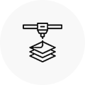
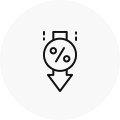
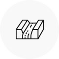
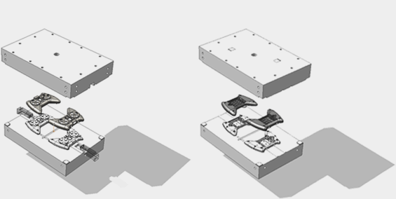
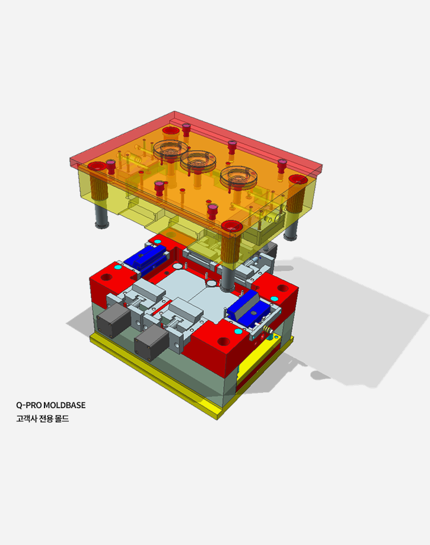
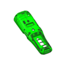
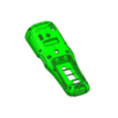
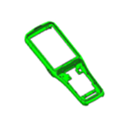
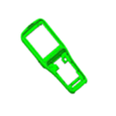

Q-Program
이에프텍은 지속적인 연구개발과 축적된 기술력을 바탕으로 최상의 제품을 생산합니다.
Q-Pro
- 주요 특징
-
고객사의 유사한 디자인 제품을 생산하기 위해 특별히 설계된 금형 방식입니다.

고객사 전용 Q-PRO 몰드베이스와 Core 를 제작하는 방식입니다.

제품 형상이 비슷한 경우 소량 다품종 생산에 용이합니다.

비슷한 크기의 모델 변경이 발생하는 경우 Core 만 제작하여,
몰드베이스는 재사용이 가능하므로 비용절감 효과가 있습니다.
하나의 몰드베이스에 Core만 교체 후 생산하는 방식으로 양산금형과 동일하게
Undercut 처리 및 냉각, 온수, 온유기 모두 사용이 가능합니다.
대량 생산이 필요한 경우 몰드베이스 추가 제작하여 양산형 금형으로 변경이 가능합니다.
Pro 금형 기본 사항
- 코어 재질 : KP4M(P20), STD61(H13), NAK80(P21), STAVAX(420),etc
- 몰드베이스 : Q-Pro 전용 몰드베이스 제작
- 금형 보장 수량 : 200,000 Shot
- 제작 기간 : 10일~20일
※ 제작 기간은 모델의 품목에 따라 변경될 수 있습니다.


견적신청
비용절감 예시
- 유사한 제품 3개 생산 시 : 하나의 전용 몰드 제작
* 3개의 코어 제작
* 코어만 교체하여 2개의 몰드 비용 절감
Saving cost (for example)
| Product image |  |  |  |  | Total price |
|---|---|---|---|---|---|
| Massprod. Moldprice |
10,000,000 | 10,000,000 | 10,000,000 | 10,000,000 | 40,000,000 |
| Q-special Mold&Core price |
15,000,000 | 5,000,000 | 5,000,000 | 5,000,000 | 30,000,000 |
Gallery

Pro 금형 견적 기본 사항
- 코어 재질 : KP4M(P20), STD61(H13), NAK80(P21), STAVAX(420),etc
- 몰드베이스 : 고객사 전용 MOLDBASE 제작
- 금형 보장 수량 : 최대 400,000 Shot
- 사출 재질 : PC or ABS,etc
- 제작 기간 : 10일~20일
대량 생산의 경우 Mass 금형 견적을 요청하십시요